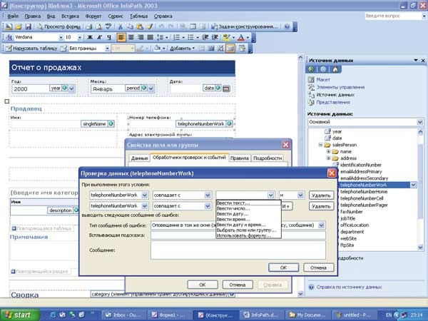
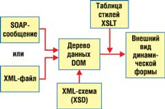
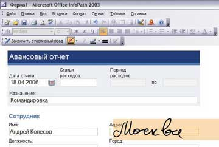

В наше время компании создают и обрабатывают огромные объемы данных - от оценок эффективности работы до объемов продаж. Сбор такой информации занимает все больше и больше сил. В частности, исследования Microsoft показывают, что на сегодняшний день в США в регулярном или периодическом сборе информации путем заполнения форм принимают участие 70 млн человек, или 59% взрослого работающего населения.
Сейчас основные способы сбора данных - это неудобные бумажные формы, сообщения электронной почты, реже - компьютерная обработка документов и бланков. Правда, многие компании используют для заполнения и последующей обработки таких форм офисные приложения (Microsoft Excel или Word) или даже создают собственные программы на основе Windows- или Web-форм, но все же с такими средствами в повседневной жизни работать не очень удобно. Именно поэтому в последнее время все большим спросом пользуются специализированные готовые инструменты, изначально ориентированные на работу с динамическими электронными формами.
Microsoft Office InfoPath - как раз такое удобное средство, которое упрощает процесс сбора данных и предоставляет возможность многократного их использования по всей организации. InfoPath представляет собой приложение, с помощью которого сотрудники могут прямо с рабочего стола получать доступ к хранящимся в компании данным, а также интеллектуальный клиентский доступ к Web-сервисам. Как правило, для решения таких задач раньше приходилось создавать специальное приложение, в котором функции управления внешним интерфейсом и связями с источниками данных были реализованы посредством программного кода (хотя бы с помощью Visual Basic). InfoPath делает то же самое, но без программирования.
Данный продукт впервые был выпущен в составе Microsoft Office 2003 (на этапе бета-тестирования он имел кодовое название XDocs - оно должно было отражать тот факт, что приложение работает с документами формата XML). Это произошло два с половиной года назад, но создается впечатление, что InfoPath не сразу попал в поле зрения российских пользователей. Наверное, одна из причин такой ситуации была в том, что InfoPath входил только в состав пакета Office 2003 Professional Enterprise Edition, распространяемого в виде корпоративных лицензий, и был фактически недоступен заказчикам из числа малых и средних предприятий (он был представлен и как автономный продукт, но коробки у нас не очень любят покупать). Однако ситуация меняется: некоторые организации уже внедрили InfoPath в свои бизнес-процессы, да и российское отделение Microsoft активизировало пропаганду этого полезного инструмента (русская локализованная версия появилась еще два года назад).
Рассказывать о возможностях InfoPath в рамках короткой журнальной статьи довольно сложно: это как раз тот случай, когда нужно просто сидеть за компьютером и показывать различные приемы работы с приложением. Впрочем, приемы можно освоить и самостоятельно с помощью встроенного учебного курса по продукту. Так что здесь мы просто расскажем о первых шагах работы с ним.
Первые шаги
InfoPath может работать в двух основных режимах: конструирования формы и ее заполнения. С заполнением все понятно: открываете форму и вносите данные в ее поля. Поля могут быть текстовыми, списками, флажками и т. д. После завершения ввода форму можно сохранить или опубликовать (это делается с помощью специального мастера).
Гораздо интереснее конструирование формы. Тут самый простой вариант - открыть какой-то готовый шаблон (их более двух десятков) и посмотреть, как он устроен. Откроем, например, в режиме конструктора шаблон "Отчет о продажах" и разберемся, как устроено поле "Номер телефона" (рис. 1). Оказывается, это поле привязано к некоему источнику, который представляет собой элемент предопределенной структуры salePerson (продавец). Элементов там довольно много, но в нашей форме используются только три - имя, телефон и адрес e-mail. Дальше, посмотрев свойства этого поля, мы увидим довольно много возможностей настройки. Например, можно задать варианты проверок вводимой информации или правила ее отображения, потребовать выполнять преобразования по формулам, анализировать взаимосвязи с другими полями и т. д.
|  |
| Рис. 1. Описание формы в режиме конструктора.
|
Следующий шаг - можно добавлять и менять местами различные компоненты формы: из числа имеющихся источников или разных элементов управления.
А если вы хотите создать новую форму, не пользуясь шаблоном? Тут есть несколько вариантов. Первый - сконструировать форму "с нуля", добавляя и описывая различные ее компоненты. Второй - использовать уже имеющийся XML-документ или XML-схему. Третий - с помощью подключения внешнего источника данных (Access, SQL Server или Web-сервисы). Четвертый - импортировать форму с Web-сайта. В общем, есть из чего выбирать…
Еще один шаг - использование механизма внутреннего программирования с помощью скриптовых языков для создания более функционально насыщенных решений. Это позволит, например, сделать так, что состав, расположение и форматирование полей будут определяться содержимым получаемых данных.
Наверное, на первый раз мы сделали уже достаточно шагов, чтобы у читателя появилось желание попробовать все это самому.
Технологии
В основу InfoPath положено широкое использование различных XML-технологий: XML, XPath, XSD, XSLT, XHTML, CSS, DOM, XML DSig, SOAP, WSDL, UDDI. На рис. 2 представлена общая логика формирования динамической формы. Исходные данные получаются из XML-файлов или SOAP-сообщений (Web-сервисов), из которых с помощью XML-схемы создается внутреннее дерево данных DOM (Document object model). Далее с применением таблиц стилей XSLT строится внешний вид документа. Однако нужно подчеркнуть, что все эти программные технологии находятся внутри приложения - пользователь управляет ими через соответствующий визуальный интерфейс. При этом InfoPath имеет также механизм внутреннего программирования при помощи скриптовых языков для создания более функционально насыщенных решений.
|  | Рис. 2. Механизм формирования динамической формы.
|
Для создания приложений на базе Microsoft Office InfoPath можно использовать Software Development Kit (SDK), который включает дополнительную документацию и примеры, демонстрирующие различные способы разработки для более гибкой настройки и подключения функционала InfoPath. В числе прочего можно интегрировать его с Access 2003, Word 2003, Microsoft Windows SharePoint Services, Microsoft BizTalk Server, Microsoft SQL Server, XML Web Services, Component Object Model (COM-объектами) и ActiveX Data Objects (ADO). Так, применяя ADO, можно задействовать InfoPath в качестве "сборщика" информации из самых разных внешних источников данных, а через BizTalk Server - интегрировать его в бизнес-процессы предприятия.
Еще более эффективный путь расширения функционала InfoPath - использовать другой набор для разработчика, InfoPath 2003 Toolkit for Visual Studio .NET. Это позволит создавать проекты InfoPath в среде Visual Studio с помощью языков C# или Visual Basic .NET и .NET Framework.
Достоинства продукта
Охарактеризовав кратко продукт, теперь покажем, что же можно делать е его помощью.
Обмен информацией между бизнес-процессами и организацией. InfoPath позволяет применять собранную информацию повторно или в других целях. Собранные данные могут использоваться в любом отделе организации. InfoPath поддерживает стандарт XML и определяемые пользователем схемы, поэтому накопленную информацию можно хранить на серверах и в базах данных. Поддержка XML и баз данных позволяют InfoPath взаимодействовать с бизнес-процессами предприятия.
Гибкое управление информацией. InfoPath дает большую гибкость при работе с постоянно изменяющимися данными. Эта программа исходно предназначена для создания и изменения форм, которые легко приспосабливаются к требованиям организации, и работы с формами, по удобству не уступающей работе с документами. Например, формы можно сохранять на локальном компьютере и работать с ними даже без подключения к сети. В InfoPath можно использовать мощные клиентские средства, в том числе средства форматирования текста, автоматического исправления, поддержки таблиц и рисунков и проверки правописания. Программа также позволяет собирать всю необходимую информацию с помощью повторяющихся разделов и необязательных полей форм.
Сохранение вложений в ИТ. Внедрение InfoPath 2003 не требует больших дополнительных вложений. Он имеет привычный интерфейс программ Microsoft Office, что снижает расходы на обучение сотрудников. Новые формы устанавливаются автоматически, позволяя работать с их последними версиями.
Сценарии применения
Их можно придумать довольно много, мы приведем лишь два.
Интеграция бизнес-процессов. InfoPath выступает в качестве интерфейса пользователя для бизнес-процессов, отвечающих за сбор и получение информации. Поддержка стандарта XML позволяет InfoPath одинаково успешно взаимодействовать как с приложениями Microsoft, так и с программами независимых разработчиков. Собранные данные можно также включать в базы данных и бизнес-процессы компании.
Например, с помощью InfoPath можно создать формы для сбора сведений о работе отдела продаж. Затем эти данные будут использоваться во всех бизнес-процессах компании, например, в системах управления взаимоотношениями с клиентами (CRM) и планирования ресурсов (ERP), а также помещаться в базу данных SQL. При этом не потребуется преобразование данных, поскольку InfoPath поддерживает XML на основе схем, определенных в данной компании. Собранные с помощью InfoPath сведения можно быстро и эффективно использовать повторно или применять при решении других задач.
Сбор информации для групп, организаций и партнеров. С помощью InfoPath можно организовать сбор информации для рабочих групп, сотрудников организаций и организаций, работающих с партнерами и клиентами. Например, отделы могут собирать отчеты своих сотрудников. Отдел по работе с персоналом компании может использовать InfoPath для создания заявок для сотрудников и распространения их внутри компании. А производственная компания может с помощью InfoPath создавать и размещать в своей экстрасети предложения о закупке для потенциальных поставщиков.
InfoPath + Tablet PC
В Интернете автор нашел одну любопытную историю, рассказанную студентом, который с помощью Tablet PC и приложения Microsoft Office InfoPath 2003 провел в аэропорту Окленда небольшое социологическое исследование среди пассажиров, заполняя анкеты по форме, которая содержала только фиксированные варианты ответов на шесть вопросов. Для этого достаточно было просто тыкать пером в экран. За час ему удалось опросить 35 человек и сразу после этого получить готовую сводную таблицу результатов.
Прочитав это, автор сам запустил InfoPath на своем Tablet PC и убедился в его "планшетных" возможностях. Оказалось, что в этой программе можно заполнять поля прямо пером, причем с очень хорошим качеством распознавания вводимого текста (рис. 3). Дело в том, что тут применяется механизм контекстно-зависимого распознавания (Contextual Awareness) с возможностью использования различных правил обработки вводимой информации. Это особенно актуально для работы с документами, представленными в виде форм с полями, которые заполняются данными определенного типа (телефонные номера, имена людей, списки профессий и т. п.). Этот механизм существенно повышает скорость ввода данных и улучшает качество распознавания.
|  |
| Рис. 3. Рукописное заполнение полей формы в приложении InfoPath с использованием механизма контекстно-зависимого распознавания.
|
Впереди InfoPath 2007
Мы рассказали здесь о первой версии продукта - InfoPath 2003. Но в начале следующего года появится пакет Office 2007, а в его составе - InfoPath 2007. В нем ожидается довольно много новшеств. Например, можно будет преобразовывать документы Word и электронные таблицы Excel в формы InfoPath, использовать для построения форм готовые фрагменты (а не отдельные компоненты), сохранять документы в форматах PDF и XPS. Пользователи смогут также передавать данные с форм InfoPath на браузеры и мобильные устройства и наоборот, получать информацию из почтовых сообщений Outlook 2007.
С помощью новых служб InfoPath Forms Services будут расширены возможности проектирования и управления формами. Например, интеграция с workflow-функциями Office SharePoint Server 2007 обеспечит автоматизацию бизнес-процессов. Будут добавлены средства управления правами доступа к информации. Логику обработки данных в форме можно будет выполнять с помощью нового инструмента Office InfoPath 2007 Logic Inspector. И наконец, для создания расширенных приложений в среде InfoPath 2007 можно будет воспользоваться Visual Studio 2005.